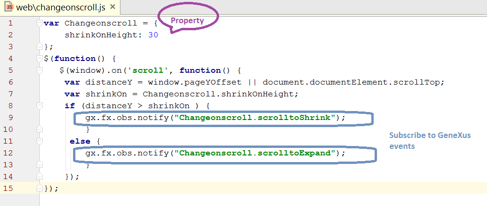
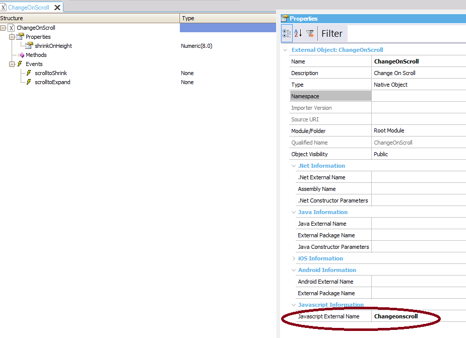
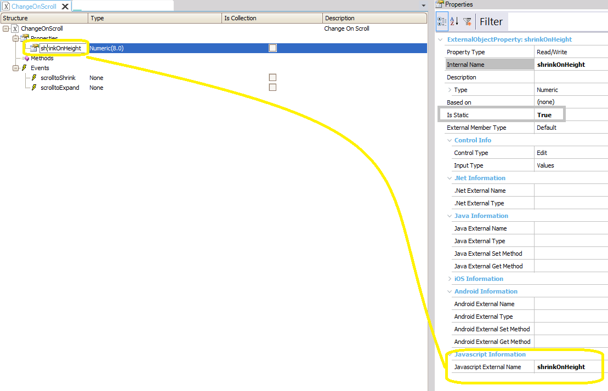
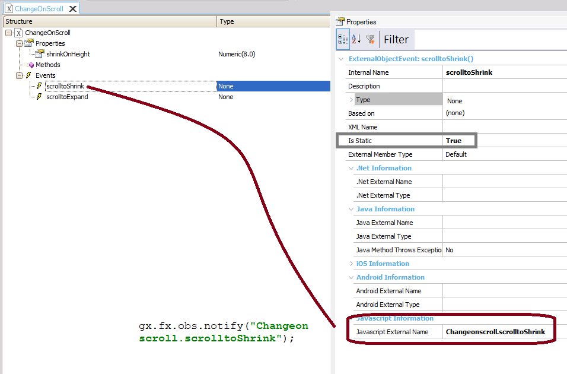
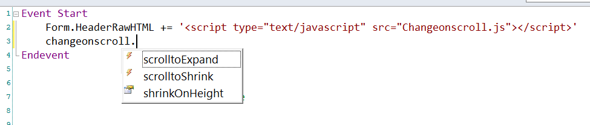
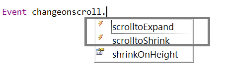

How to execute GeneXus events from JS code using External Objects
The following example shows how to execute GeneXus events from Javascript code using External Objects. In particular, in this example, we interact with the browser and trigger a GeneXus event in response to a Javascript event (the scroll event). The scroll event is fired when the document view has been scrolled. In GeneXus, we define an event handler for window scrolling. For example, if our web pages have a fixed header (with absolute position), we can make the header shrink when the pixels scrolled in the current document (vertically) reach a certain value. On the other hand, the header can expand again when the window is scrolled by the user and the pixels do not reach that value.
What is the purpose of this example?
First, we define the Javascript (changeonscroll.js) as follows: 
External object definitionThe External object has the Javascript External Name property set to Changeonscroll.
 Remember that events are always static, so the property "shrinkOnHeight" is defined as static as well, and the Javascript External Name property is set to shrinkOnHeight because that's the name of the property in the JS source.  The Javascript External Name property of the event is the name used in the Javascript definition to map to the GeneXus event.  It can be useful to namespace your events so you don't unintentionally disconnect events that you didn't or couldn't know about. Using the EO from GX codeFirst, add the reference to the JS in the HTTP headers of the page. Use Javascript Referenced files property. Otherwise, do the following:
Event Start
Form.HeaderRawHTML += '<script type="text/javascript" src="Changeonscroll.js"></script>'
Endevent
Note: Another way is to do
Event Start
Form.JScriptSrc.Add("Changeonscroll.js")
Endevent
Since shrinkOnHeight is a static property, we don't need to define a variable based on the External object, and the assignment to it is static: 
So, the start event is as follows:
Event Start
Form.HeaderRawHTML += '<script type="text/javascript" src="Changeonscroll.js"></script>'
changeonscroll.shrinkOnHeight = 20
Endevent
The events in GeneXus will be the following: 
Event changeonscroll.scrolltoShrink
//here code the handler for the event
content.Class = ThemeClass:TableContainer
Endevent
Event changeonscroll.scrolltoExpand
//here code the handler for the event
content.Class = ThemeClass:TableContainer1
Endevent
Download from Change on scroll sample. See alsoHow to implement a dictionary data type using JS and server side code
|
| Backlinks | |
| External Objects for Javascript | How to interact with the Window Object's Methods |